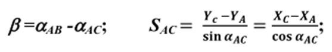
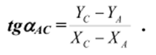
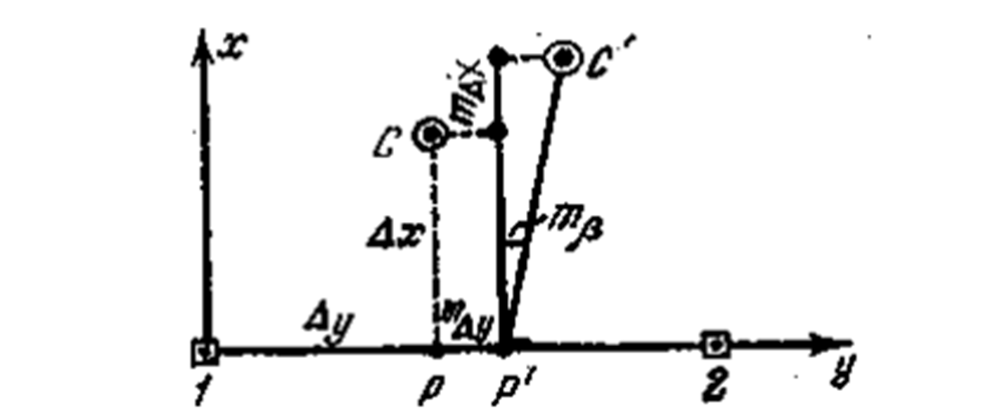
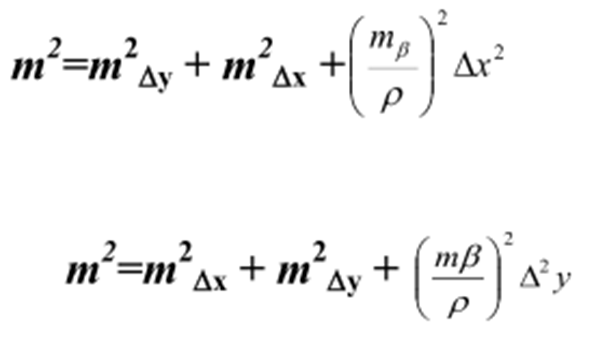
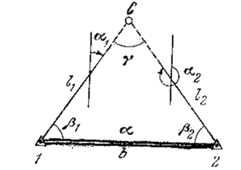

13-маруза Мавзу: Бино ва иншоотлар ўқлари ва нуқталарини режалаш ишлари
Бино ва иншоотларнинг асосий ўқларини режалаш, бино турига, ўлчаш шароити ва талаб қилинган
аниқликка боғлиқ бўлган ҳолда турли хил усулларда амалга оширилиши мумкин. Қутбий ва тўғри
бурчакли координаталар, бурчак кесиштириш, ёпиқ учбурчак усуллари, шулар жумласидандир.
Қутбий координаталар усули, асосан лойиҳани жойга кўчиришда полигонометрия пункти
мавжуд
бўлган ҳолатда қўлланилади. Лойиҳавий С нуқтанинг жойдаги ҳолати лойиҳавий в бурчак ва
лойиҳавий S масофани ясаш билан аниқланади. Лойиҳавий қийматлар В ва S тескари геодезик
масала ечиш орқали аниқланади:


Бу ерда А пункт координаталари XA, УА; АВ томон дирекцион
бурчаги аAB; С нуқта
координаталари Хc , Ус лойиҳада берилган.
Тўгри бурчакли координаталар усули. Бу усул асосан қурилиш майдонида қурилиш тўри
мавжуд
бўлган ҳолларда қўлланилади. Тўрнинг яқин пунктидан координата орттирмалари X ва У
ҳисобланади ва белги
марказидан тўр бўйлаб абцисса ёки ордината ўлчаб қўйилади (1-расм).
Топилган Р нуқтага теодолит ўрнатилади ва тўр томонига нисбатан тўғри бурчак ясалади.
Перпендикуляр бўйлаб иккинчи орттирма ўлчаб қўйилади ва
топилган С нуқта маҳкамланади.

1-расм. Тўғри бурчакли координаталар усули
Ўлчаш хатоларининг таъсири натижасида Pва с нуқталар ўрнига жойда Р' ва С нуқталар
белгиланади. Нуқтани тўғри бурчакли координаталар усулида режалаш аниқлигига асосан
координата орттирмаларини ўлчаб қўйишдаги йўл қўйиладиган хатолик (max ва тлу) ва тўғри
бурчак ясаш хатолиги (mg) таъсир кўрсатади, яъни:

Ифодадан шундай хулосага келишимиз мумкинки, бу усулда нуқтани режалашда орттирма қиймати
катта масофани тўр бўйлаб, кичик масофани эса перпендикуляр бўйлаб ўлчаб қўйиш керак.
Бурчак кесиштириш усули. Бу усул асосан кўприк қурилиши, ҳамда гидротехник иншоотларни
режалашда қўлланилади. Бурчак кесиштириш усулида лойиҳавий С нуқтанинг жойдаги ҳолати
(2-расм) 1ва 2 нуқталардан 1ва 2 бурчаклар ўлчанишидан ҳосил бўлган йўналишлар кесишиши
орқали аниқланади.

2-расм. Бурчак кесиштириш усули.
Режалаш бурчаклари в ва В, томонлар дирекцион бурчаклари фарқи сифатида ҳисобланади.
Дирекцион бурчаклар эса нуқталар лойиҳавий координаталари ёрдамида тескари геодезик масала
ечиш натижасида ҳисобланади.